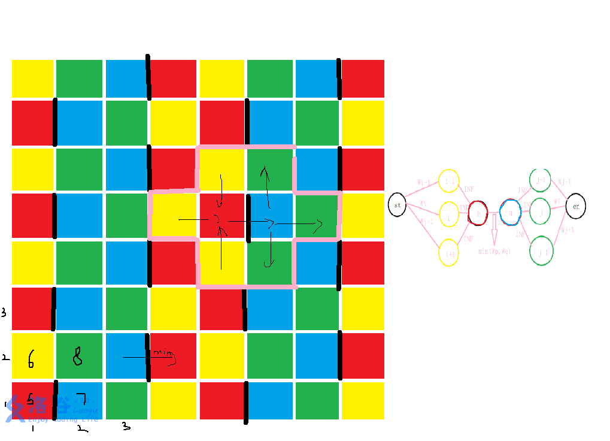

good题，考虑像 国家集训队 - happiness 一样在棋盘上搞染色，我毛张 @shadowice1987 的图给你看啊

你像这样奇数层以 red -> blue -> green -> yellow 为一个周期，偶数层 yellow -> green -> blue -> red，就会发现给出的形状都包括恰好四种颜色和一条黑线。那现在就好搞了，就是要在每个连通块里面删除至少一种颜色的全部方块（包括黑线），有这样几种选择：全绿 / 全黄 / 全黑线（即破环红或蓝中的一个），像图右侧一样建图就好了。
#include<bits/stdc++.h>
using namespace std;
enum Color { red=1,blue,yellow,green };
const long long INF=0x3f3f3f3f;
template<class Kap> struct Net {
const long long n;
struct Arc {
long long to, rev; Kap cap;
};
vector<long long> lev,iter;
vector<vector<Arc>> e;
std::queue<long long> q;
Net(long long n):n(n),e(n),lev(n),iter(n) {}
void add(long long one,long long ano,Kap cap) {
// printf(" %lld %lld %lld\n",one,ano,cap);
e[one-1].push_back((Arc){ano-1,(long long)(e[ano-1].size())+(one==ano),cap});
e[ano-1].push_back((Arc){one-1,(long long)(e[one-1].size())-1,0});
}
Kap solve(long long s,long long t) { return solve(s-1,t-1,std::numeric_limits<Kap>::max()); }
bool Getlayer(long long s,long long t) {
lev.assign(n,0);
while(q.size()) q.pop();
lev[s]=1;
q.emplace(s);
while(q.size()) {
long long now=q.front();
q.pop();
if(now==t) break;
for(long long i=0; i<(long long)(e[now].size()); ++i) {
long long y=e[now][i].to; Kap cap=e[now][i].cap;
if(!lev[y] && cap) lev[y]=lev[now]+1,q.emplace(y);
}
}
return lev[t];
};
Kap Augment(long long now,Kap up,long long t) {
if(now==t) return up;
Kap rlow=0;
for(long long& i=iter[now]; i<(long long)(e[now].size()); ++i) {
if(!up) break;
long long y=e[now][i].to; Kap& cap=e[now][i].cap;
if(lev[y]==lev[now]+1 && cap) {
Kap f=Augment(y,min(up,cap),t);
if(f<=0) continue;
cap-=f; e[y][e[now][i].rev].cap+=f; up-=f; rlow+=f;
}
}
if(!rlow) lev[now]=n+1;
return rlow;
};
Kap solve(long long s,long long t,const Kap inf) {
lev.assign(n,0); iter.assign(n,0); Kap res=0,tmp;
while (Getlayer(s,t)) {
iter.assign(n, 0);
if((tmp=Augment(s,inf,t))) res+=tmp;
else break;
}
return res;
}
};
long long r,c,n,celx[100100],cely[100100],celw[100100],S,T,co[100100];
map<long long,long long> mp;
bool valid(long long x,long long y) { return x>=1 && x<=r && y>=1 && y<=c; }
long long getid(long long x,long long y) { return 1ll*(x-1)*c+y; }
signed main() {
scanf("%lld %lld %lld",&c,&r,&n);
for(long long i=1; i<=n; ++i) scanf("%lld %lld %lld",&cely[i],&celx[i],&celw[i]),mp[getid(celx[i],cely[i])]=i;
// for(long long i=1; i<=n; ++i) printf(" ---- %lld %lld %lld\n",celx[i],cely[i],celw[i]);
for(long long i=1; i<=n; ++i) {
if(cely[i]%4==0) co[i]=(celx[i]&1)?3:1;
else if(cely[i]%4==1) co[i]=(celx[i]&1)?1:3;
else if(cely[i]%4==2) co[i]=(celx[i]&1)?2:4;
else co[i]=(celx[i]&1)?4:2;
}
// char tmp[5][10]={"tmp","red","blue","yellow","green"};
// for(long long i=1; i<=n; ++i) puts(tmp[co[i]]);
// for(long long i=1; i<=n; ++i) printf(" %lld",co[i]);
// puts("");
// 1 for red, 2 for blue, 3 for yellow, 4 for green
Net<long long> G(n+2); S=n+1; T=n+2;
for(long long i=1; i<=n; ++i) {
if(co[i]==yellow /*yellow*/) {
G.add(S,i,celw[i]);
if(valid(celx[i],cely[i]-1)) {
long long j=mp[getid(celx[i],cely[i]-1)];
if(j && co[j]==red) G.add(i,j,INF);
}
if(valid(celx[i],cely[i]+1)) {
long long j=mp[getid(celx[i],cely[i]+1)];
if(j && co[j]==red) G.add(i,j,INF);
}
// printf(" --- %lld %lld\n",celx[i],cely[i]);
if(valid(celx[i]-1,cely[i])) {
long long j=mp[getid(celx[i]-1,cely[i])];
if(j && co[j]==red) G.add(i,j,INF);
}
if(valid(celx[i]+1,cely[i])) {
long long j=mp[getid(celx[i]+1,cely[i])];
if(j && co[j]==red) G.add(i,j,INF);
}
}
else if(co[i]==green /*green*/) {
G.add(i,T,celw[i]);
if(valid(celx[i],cely[i]-1)) {
long long j=mp[getid(celx[i],cely[i]-1)];
if(j && co[j]==blue) G.add(j,i,INF);
}
if(valid(celx[i],cely[i]+1)) {
long long j=mp[getid(celx[i],cely[i]+1)];
if(j && co[j]==blue) G.add(j,i,INF);
}
if(valid(celx[i]+1,cely[i])) {
long long j=mp[getid(celx[i]+1,cely[i])];
if(j && co[j]==blue) G.add(j,i,INF);
}
if(valid(celx[i]-1,cely[i])) {
long long j=mp[getid(celx[i]-1,cely[i])];
if(j && co[j]==blue) G.add(j,i,INF);
}
}
else if(co[i]==red) {
if(valid(celx[i],cely[i]+1)) {
long long j=mp[getid(celx[i],cely[i]+1)];
// if(celx[i]==1 && cely[i]==1 && j) printf(" -- %lld %lld %lld %lld %lld\n",celx[i],cely[i],celw[i],getid(celx[i],cely[i]),mp[getid(celx[i],cely[i])]);
if(j && co[j]==blue) G.add(i,j,min(celw[i],celw[j]));
}
if(valid(celx[i],cely[i]-1)) {
long long j=mp[getid(celx[i],cely[i]-1)];
// if(celx[i]==1 && cely[i]==1 && j) printf(" -- %lld %lld %lld %lld %lld\n",celx[i],cely[i],celw[i],getid(celx[i],cely[i]),mp[getid(celx[i],cely[i])]);
if(j && co[j]==blue) G.add(i,j,min(celw[i],celw[j]));
}
if(valid(celx[i]+1,cely[i])) {
long long j=mp[getid(celx[i]+1,cely[i])];
// if(celx[i]==1 && cely[i]==1 && j) printf(" -- %lld %lld %lld %lld %lld\n",celx[i],cely[i],celw[i],getid(celx[i],cely[i]),mp[getid(celx[i],cely[i])]);
if(j && co[j]==blue) G.add(i,j,min(celw[i],celw[j]));
}
if(valid(celx[i]-1,cely[i])) {
long long j=mp[getid(celx[i]-1,cely[i])];
// if(celx[i]==1 && cely[i]==1 && j) printf(" -- %lld %lld %lld %lld %lld\n",celx[i],cely[i],celw[i],getid(celx[i],cely[i]),mp[getid(celx[i],cely[i])]);
if(j && co[j]==blue) G.add(i,j,min(celw[i],celw[j]));
}
}
}
printf("%lld\n",G.solve(S,T));
return 0;
}